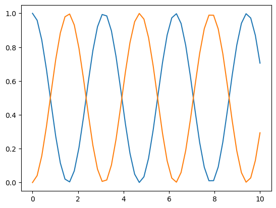

Implementación de ejemplo
Importamos módulos necesarios
Para utilizar estas funciones, necesitamos acceso a los tipos np.array, de
manera que los importamos junto con una librería para graficar los arreglos
finales. En este caso, se utilizará matplotlib.
Definimos las funciones a utilizar
# Función que modela la evolución temporal (ver Referencia)
def dyn_generator(oper, state):
return -1j * (np.dot(oper, state) - np.dot(state, oper))
# Función que implementa el método RK4 (ver Referencia)
def rk4(func, oper, state, h):
k1 = h * func(oper, state)
k2 = h * func(oper, state + k1 / 2)
k3 = h * func(oper, state + k2 / 2)
k4 = h * func(oper, state + k3)
return state + (k1 + 2*k2 + 2*k3 + k4) * (1 / 6)
Insumos
Definimos insumos, operador, estado inicial, arreglos y tamaño del paso. También inicializamos arreglos para guardar los datos obtenidos.
oOper = np.array([[0, 1], [1, 0]]) # Note que estos insumos son de tipo:
yInit = np.array([[1, 0], [0, 0]]) # np.array
times = np.linspace(0, 10, 50)
h = times[1] - times[0]
# Aquí guardaremos los estados obtenidos para graficarlos posteriormente
stateQuant00 = np.zeros(times.size)
stateQuant11 = np.zeros(times.size)
Confeccionar arreglos
Vamos guardando los datos obtenidos de acuerdo al rango que le establecimos anteriormente.
for tt in range(times.size):
# Guarde el valor de las entradas (0,0) y (1,1) en los arreglos que
# definimos, btenga estos valores de las entradas de yInit
stateQuant00[tt] = yInit[0, 0].real
stateQuant11[tt] = yInit[1, 1].real
# Invoque rk4 operando sobre yInit y devuelva el resultado al yInit, de esta
# manera, en la siguiente iteración, el operador de esta iteración se
# convierte en el inicial
yInit = rk4(dyn_generator, oOper, yInit, h)
Resultados
